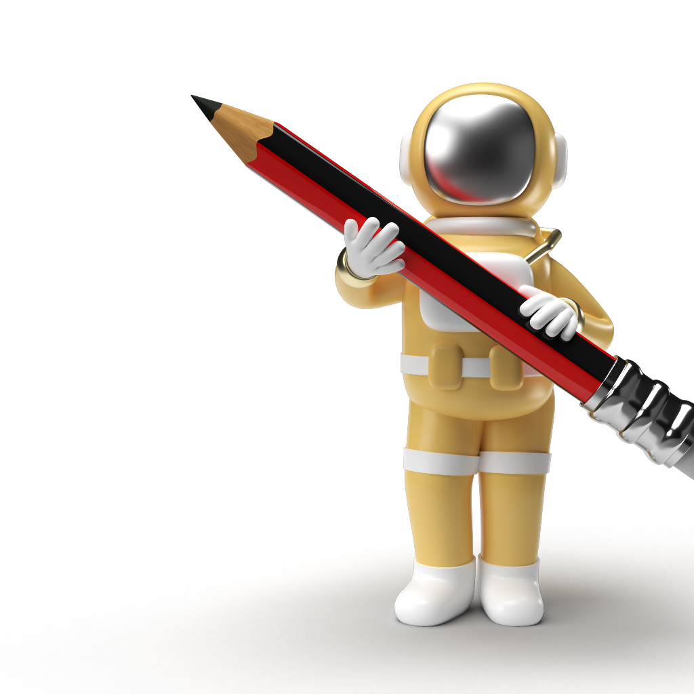

My Content BotAutomated creation and publishing of AI-generated short videos to TikTok.
My Content Bot is a private automation tool that generates short-form video content using AI and publishes it directly to TikTok on a scheduled basis, using TikTok's official Content Posting API.
How it works:
This is a personal-use tool built to manage content publishing for accounts you own. It is not a public service and does not act on behalf of third-party users.
The app requests only the TikTok permissions strictly necessary to authenticate your account and publish video content on your behalf. See the Privacy Policy below for full details on what data is accessed and how it's handled.